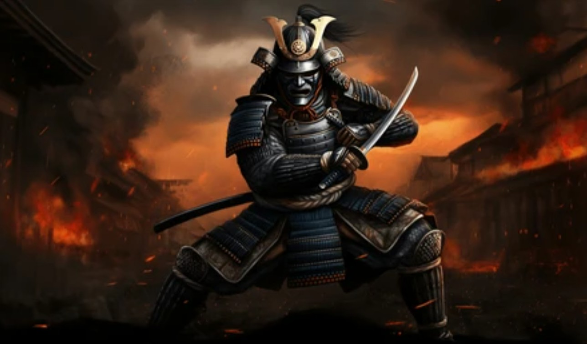

The Samurai were the military nobility and officer caste of medieval and early-modern Japan. More than just soldiers, they were poets, politicians, and philosophers who lived by a rigid moral code that shaped Japanese culture for over 700 years.
At the heart of the Samurai spirit was Bushido (The Way of the Warrior). This was a set of unwritten rules that every Samurai had to follow to maintain their honor.
Justice & Integrity
Respect & Politeness
Heroic Courage
Honor & Glory
While the age of the Samurai ended in the late 19th century, their values of discipline, loyalty, and self-mastery continue to inspire people worldwide. From modern martial arts to cinema, the legend of the Samurai remains immortal.